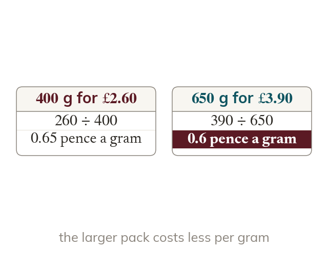
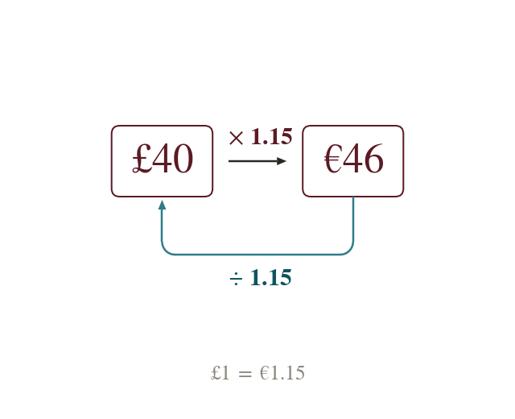
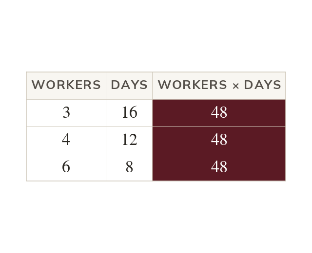
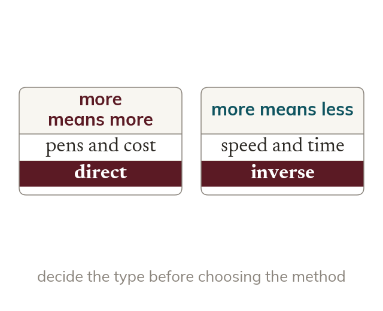

Compare the cost of one unit
A unit cost puts different pack sizes on the same footing. The best buy has the lowest cost per unit.
Shops, banks and builders all rely on proportion: what one costs, what a pound buys, how long a job takes. Telling direct from inverse decides whether to multiply or divide.
Work down the page at your own pace. Write every answer in your book first, then click to check it.
Read each card, then follow the worked examples one step at a time.

A unit cost puts different pack sizes on the same footing. The best buy has the lowest cost per unit.

An exchange rate is a direct proportion between two currencies. Multiply to go one way and divide to come back.
Pick an answer. If it's wrong, the feedback tells you which mistake it was.
Read each card, then follow the worked examples one step at a time.

In inverse proportion, doubling one quantity halves the other. So their product stays the same.

More of one with more of the other is direct. More of one with less of the other is inverse.
Pick an answer. If it's wrong, the feedback tells you which mistake it was.
Finished? Next lesson: 10H.19.1 Proportion Notation and Graphs.
Log in, then search for a code to practise that skill.
Videos, worksheets and more on each part of this lesson.